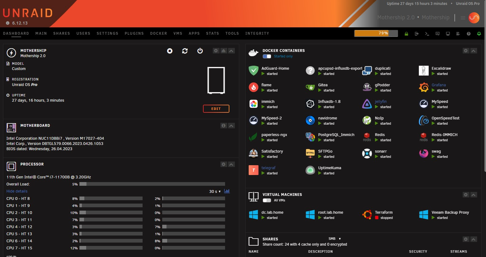

Unraid - A Storage Journey
How i use Unraid
1784 Words Words // ReadTime 8 Minutes, 6 Seconds
2024-11-19 23:00 +0100
My Custom Unraid Storage Build - Flexibility, Simplicity, and Future-Proofing
As a passionate homelaber, I enjoy not only using technology but also understanding and customizing it to suit my needs. My Unraid storage system is one of my longest-running projects, continuously evolving to meet the demands of my homelab.
After thorough research, I decided to go with Unraid – an operating system renowned for its simplicity, flexibility, and scalability. These key features were the deciding factors for me:
- Easy Expansion: Unraid allows combining drives of different sizes and expanding the array later without replacing all disks at once.
- Docker Integration: The ability to run Docker containers directly on Unraid unlocks immense potential for personal projects and applications.
- Versatility: Whether it’s managing data, running a media server, or hosting virtual machines, Unraid offers the freedom to adapt the system to your needs.
In this blog post, I’ll share my experience and guide you through how I’ve planned, built, and continuously improved my Unraid storage system. It’s a perfect solution for anyone seeking a scalable, cost-effective setup without sacrificing performance or ease of use.
The Beginning: My First Steps with Unraid
Unraid is a commercial product that initially caught my attention due to its unique approach to storage management. Historically, Unraid licenses were available for a one-time purchase, providing lifetime access to its features. Today, however, users can choose between a subscription model or a lifetime license, offering flexibility depending on individual needs.
One of the standout features of Unraid is that it boots directly from a USB stick. This design choice not only simplifies installation but also makes it incredibly easy to replace hardware. Simply move the USB stick to a new machine, and the system is ready to run without the need for extensive reconfiguration.
My first Unraid “server” was far from conventional: a Lenovo notebook powered by an old Intel Dual-Core processor. To build my initial array, I used external USB disks – a true makeshift setup but perfect for testing the waters. For three weeks, this setup served as my proof of concept (POC), allowing me to explore Unraid’s capabilities and ensure it met my needs before committing to more suitable hardware.
This early experimentation confirmed that Unraid was the right choice for my homelab, and I soon began planning and acquiring the components for my first proper build.
Building a 3-Tier Performance Storage System
As my Unraid setup evolved, I implemented a 3-tier performance storage system to meet the varying demands of my homelab. Each tier is tailored for a specific purpose, optimizing the balance between speed, capacity, and efficiency:
- Tier 1: The Unraid Array (Slow Storage) At the foundation of my storage system is the Unraid Array, which serves as the slowest but most capacious tier. Unlike traditional RAID, an Unraid Array does not stripe data across disks. Instead, each disk holds individual files, while parity disks provide fault tolerance for data recovery. This unique design allows mixing drives of different sizes, making upgrades straightforward and cost-effective. My Unraid Array is hosted in an external USB 3.2 storage shelf, which presents each drive individually to Unraid. The shelf delivers enough bandwidth to operate all six 6TB enterprise SATA drives at full speed, ensuring reliable performance even during intensive data access.
-
Tier 2: Consumer NVMe Drives (Fast Cache and Docker Storage) The second performance tier consists of consumer-grade NVMe drives, configured in a btrfs pool within Unraid. This configuration not only allows advanced features like snapshots but also supports RAID levels within the pool, providing a balance between performance and redundancy. This tier is designed to handle tasks requiring high-speed I/O, such as hosting Docker containers. Keeping Docker data on the NVMe tier ensures that the Unraid Array doesn’t need to spin up unnecessarily, prolonging the life of the disks and improving system responsiveness. The NVMe drives also serve as a fast cache for incoming data. Files uploaded to the NAS during the day are stored on the NVMe tier and then moved to the slower Unraid Array overnight—except for Docker data, which always remains on the NVMe storage to maintain optimal performance. Unraid’s flexibility makes it easy to decide whether specific shares or data should stay on the NVMe pool or be automatically moved to the Array on a scheduled basis. This level of control ensures you can optimize storage placement to suit your workload, balancing speed and capacity seamlessly.
-
Tier 3: Enterprise NVMe via iSCSI (Fast and Durable Storage) The top tier features a 4TB enterprise NVMe drive, designed for high-speed and durable performance under constant load. This storage tier is shared with my homelab servers via iSCSI Multichannel, utilizing a 2x10Gb Intel X710 NIC for redundancy and maximum throughput. This tier provides fast, reliable storage for workloads that demand consistent performance, such as virtual machines or other critical applications in my homelab. By leveraging enterprise-grade hardware and robust networking, this storage layer ensures low-latency access and can handle the demands of continuous use without compromising reliability.
Current Setup
My Unraid server is built on a Intel NUC Extreme 11th Gen i7 with 64GB of RAM, offering a powerful and compact platform for my homelab. The storage setup includes 2x 1TB consumer-grade NVMe drives for fast cache and 4TB enterprise-grade NVMe for ultra-reliable, high-performance storage.
The Unraid Array has a total capacity of 42TB, with 33.4TB usable for data storage. This provides ample space for both my active projects and long-term storage needs.
On the software side, I host 29 Docker container services and 4 virtual machines, including critical services such as my Active Directory (AD), Certificate Authority (CA), and a Veeam Proxy for file backups. This setup allows for a highly efficient and flexible environment that supports a wide range of use cases while maintaining reliable performance.

Performance
The performance of my Unraid setup was measured using CrystalDiskMark with a 16GB test file (on a Windows 11 VM) to evaluate both sequential and random read and write speeds, as well as IOPS (Input/Output Operations Per Second) of my iSCSI Storage (Tier 3). The results highlight the impressive capabilities of the system:
Read Performance:
- Sequential Read (Q8T1): 1.993 GB/s | IOPS: 1900.35
- Sequential Read (Q1T1): 0.782 GB/s | IOPS: 746.21
- Random Read 4K (Q32T1): 0.322 GB/s | IOPS: 78,651.61
- Random Read 4K (Q1T1): 0.021 GB/s | IOPS: 5,149.17
Write Performance:
- Sequential Write (Q8T1): 1.247 GB/s | IOPS: 1,189.37
- Sequential Write (Q1T1): 0.802 GB/s | IOPS: 764.48
- Random Write 4K (Q32T1): 0.298 GB/s | IOPS: 72,776.61
- Random Write 4K (Q1T1): 0.036 GB/s | IOPS: 8,835.45
These performance metrics demonstrate both the high throughput and responsiveness of the NVMe storage. The sequential read and write speeds are excellent for large file transfers, while the random IOPS (especially at Q32T1) indicate the drive’s ability to handle a high volume of small, random data requests. Despite the lower random read/write speeds at Q1T1, the system still shows strong overall performance for a variety of tasks.
Understanding the CrystalDiskMark Test Parameters
In CrystalDiskMark, several key parameters define how the storage device is tested. Here’s a breakdown of what each test represents:
Q8T1: This stands for Queue Depth 8, Thread 1. It simulates a scenario where 8 data requests are queued up, but only 1 thread (or process) is handling those requests. This type of test is useful for measuring the performance of the storage device when handling multiple sequential tasks at once, but not with excessive parallelism.
Q1T1: This stands for Queue Depth 1, Thread 1. Here, only 1 data request is in the queue, and a single thread handles it. This test represents the performance when a single request is being processed at a time, simulating typical user scenarios where one operation is occurring without significant multitasking.
Q32T1: This stands for Queue Depth 32, Thread 1. In this case, there are 32 queued data requests with a single thread handling them. This test simulates heavy workloads where many data requests are pending, but only one thread is processing them. It can show how the device handles stress under larger, more sustained read operations.
Sequential vs. Random Read Tests
Sequential Read: This test measures how fast the storage device can read large, contiguous chunks of data, like streaming a video or transferring large files. It simulates real-world scenarios where large files need to be read from the storage at a steady rate.
Sequential Read (Q8T1): 1.993 GB/s – This high performance indicates the drive can handle multiple large file read operations quickly, with 8 data requests queued up. Sequential Read (Q1T1): 0.782 GB/s – This is slower than the Q8T1 test because only one request is processed at a time, simulating less intensive operations.
Random Read: This test measures the performance when the drive has to read small, non-contiguous chunks of data from different parts of the storage. This type of test is more representative of workloads like database operations or running small applications that frequently access different data blocks.
Random Read 4K (Q32T1): 0.322 GB/s – With 32 queued requests and 4KB blocks, this performance shows how the system handles multiple random reads. Random Read 4K (Q1T1): 0.021 GB/s – Here, only one small request is being handled at a time, leading to slower performance because random 4K reads are typically slower due to the overhead of accessing many different locations on the disk.
These tests give a complete picture of the drive’s performance under different scenarios: from high-speed, sequential reads (large files) to more intensive, random access (small files), and with varying levels of workload concurrency.
BOM (Bill of Materials)
- NUC11DBBi7 , Version M17027-404
- 2x 32 GB RAM Kingston KF3200C20S4 SODIMM DDR4 Synchronous 3200 MHz
- TerraMaster D6-320 USB 3.2(Gen2)
- 3x TOSHIBA_MG09ACA18TE 18 TB Enterprise SATA
- 1x TOSHIBA_MG08ADA600E 6 TB Enterpise SATA (to change)
- 2x Samsung 970 EVO Plus 1TB
- 1x Samsung MZ1L23T8HBLA-00A07 4 TB Enterprise NVMe 110mm
- 1x Intel X710 2x 10 Gb/s
- 1x Good USB Stick (32GB)